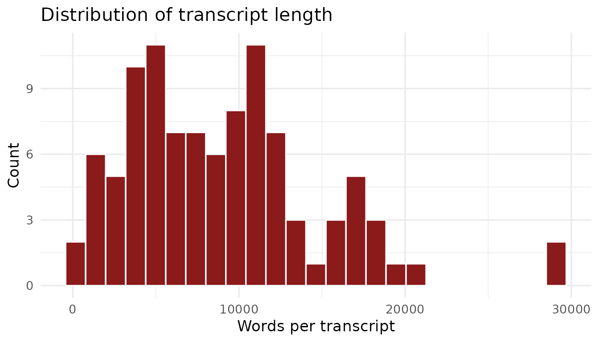
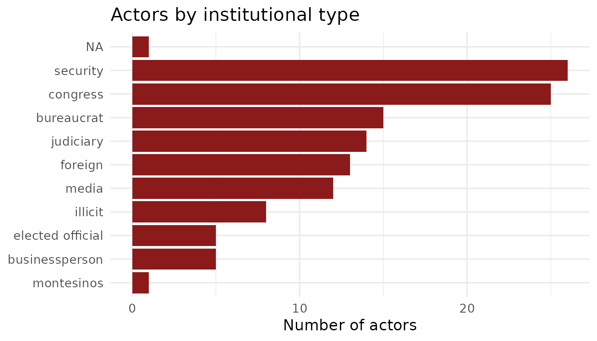
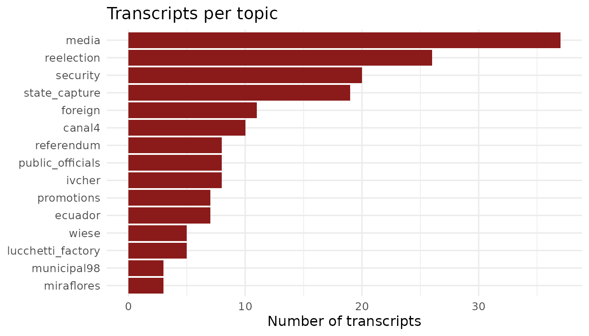
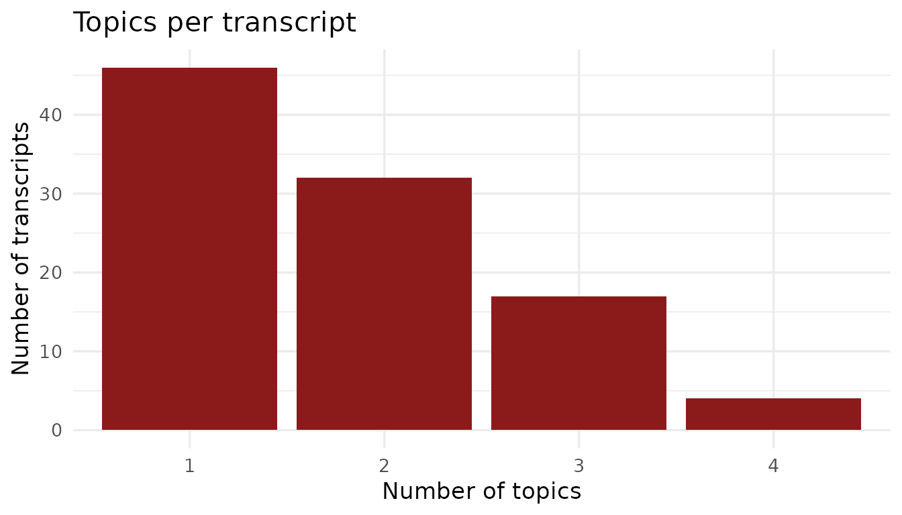

About the Vladivideos
(PICTURE)
Between 1990 and 2000, Vladimiro Montesinos Torres — the head of Peru’s National Intelligence Service under President Alberto Fujimori — secretly recorded meetings in which he bribed politicians, judges, military officers, media executives, and businesspeople. Most of the aptly named Vladivideo footage (and subsequent transcripts included in this package) was covertly recorded from within Montesinos’ office, unbeknownst to his counterparts.
Select recordings became public in 2000 and triggered the collapse of the Fujimori government. The rest were made public in 2001 during Congressional investigations and criminal proceedings. The Fujimori presidency remains one of the most extensively documented cases of systemic corruption in Latin American history, thanks to the evidence from the Vladivideos.
The videos capture corruption across every major institution of the Peruvian state: legislators accepting cash to switch party allegiances, television channel owners receiving monthly payments to censor news coverage, military generals coordinating electoral suppression, and judges confirming their availability to rule in Montesinos’s favor.
See, for example, this exchange about consolidating power in the judicial branch between Montesinos and Alipio Montes de Oca, Supreme Court Judge (Transcript XX1, May 3, 1998). This exchange is printed in English with Spanish original text in italics below.2
MONTES DE OCA — Okay, just say it.
MONTES DE OCA — Ya, di no más.
MONTESINOS TORRES — The first is that you rejoin the
Executive Commission.
MONTESINOS TORRES — La primera es que te
reincorpores a la Comisión Ejecutiva.
MONTES DE OCA — Okay.
MONTES DE OCA — Ya.
MONTESINOS TORRES — Because on Monday I have to make
a move.
MONTESINOS TORRES — Porque el lunes tengo
que dar un golpe.
MONTES DE OCA — Okay.
MONTES DE OCA — Ya.
MONTESINOS TORRES — I already spoke with Víctor Raúl
and with Serpa; they agree that the (unintelligible). Someone has told
them what we are going to do on Monday. And the next step is
(unintelligible) of the National Elections Jury (unintelligible), the
President of the Jury (unintelligible).
MONTESINOS TORRES — Ya hablé con Víctor
Raúl y con Serpa, están de acuerdo en que los (ininteligible) alguien
les ha dicho lo que vamos a hacer el lunes. Y el siguiente paso es
(ininteligible) del Jurado Nacional de Elecciones (ininteligible) el
Presidente del Jurado (ininteligible).
MONTES DE OCA — Right, that is why I am asking you
for (unintelligible), and what we had agreed on, remember
(unintelligible). So we talk more directly here; we leave it that way
(unintelligible).
MONTES DE OCA — Ya, por eso yo te estoy
pidiendo (ininteligible) y que habíamos quedado te acuerdas
(ininteligible). Entonces, conversamos más directos acá, quedamos así
(ininteligible).
BribeR provides structured access to transcripts of 101 of these recordings, which contain 47,375 individual speech turns. The package also includes relevant metadata about 125 recorded speakers and 15 topics.
This page introduces the raw data, highlighting how it is organized at the transcript-, actor-, and topic-level. This page uses some of the functions included in BribeR, all of which are detailed in the User Guide.
Transcripts
The corpus spans recordings made between 1996 and 2000, covering the period after Fujimori’s successful bid for a second term through the final months before the regime’s collapse. Transcripts were collected from two main sources:
- LUM digital collections: 62 transcripts accessed through the digital holdings of the Lugar de la Memoria, la Tolerancia y la Inclusión Social (LUM).
- Congressional print volumes: 39 transcripts from the six-volume collection En la sala de la corrupción: Videos y audios de Vladimiro Montesinos (1998–2000), edited by Antonio Zapata Velasco and published by the Fondo Editorial del Congreso del Perú. These volumes reproduce records originally made available by the Peruvian Congress, including the transcripts available through LUM as well as additional transcripts not available in LUM’s online database. We digitized and OCRed the transcripts that were present only in the print volumes.
library(BribeR)
library(dplyr)
library(ggplot2)
## There are 101 transcripts in the dataset
meta <- read_transcript_meta_data()
nrow(meta)
#> [1] 101Transcripts range from brief exchanges of a few hundred words to lengthy multi-hour meetings exceeding 29,000 words. The median transcript is approximately 8,500 words (approximately an hour-long conversation).
summary(meta$n_words)
#> Min. 1st Qu. Median Mean 3rd Qu. Max.
#> 175 4544 8547 8946 11721 29161
ggplot(meta, aes(x = n_words)) +
geom_histogram(bins = 25, fill = "#8B1A1A", color = "white") +
labs(
title = "Distribution of transcript length",
x = "Words per transcript",
y = "Count"
) +
theme_minimal(base_size = 13)
Actors
Users can access biographical and institutional metadata for the 125
individuals named in the Vladivideos transcripts through the
actors dataset. Each person is classified by their
institutional role at the time of the recordings.
head(actors[, c("speaker", "Position", "Type", "Party", "speaker_std")])
#> # A tibble: 6 × 5
#> speaker Position Type Party speaker_std
#> <chr> <chr> <chr> <chr> <chr>
#> 1 Vladimir Montesinos Alberto Fujimori's Ch… Secu… NA MONTESINOS
#> 2 Desconocido NA NA NA DESCONOCIDO
#> 3 Alexander Martin Kouri Bumachar Elected Constituent C… Cong… Part… ALEX KOURI
#> 4 Lucchetti Company specialized i… Busi… NA LUCCHETTI
#> 5 Carlos Eduardo Ferrero Costa Congressman (1995-200… Cong… Camb… FERRERO
#> 6 Alberto Fujimori President of Peru (19… Elec… NA FUJIMORIActors are grouped into nine categories:
| Type | Count | Description |
|---|---|---|
Security |
31 | Military and police officers |
Congress |
25 | Members of Congress, including opposition members bribed to switch allegiance |
Judiciary |
18 | Judges, prosecutors, and members of the electoral tribunal |
Media |
14 | Television channel and newspaper executives |
Businessperson |
12 | Private sector executives and financiers |
Elected Official |
9 | Mayors, executives, and (non-Congressional) other elected officials |
Bureaucrat |
8 | Senior civil servants and agency heads |
Illicit |
5 | Individuals primarily associated with armed groups |
Foreign |
3 | Foreign officials and diplomats |
This figure shows that the three most common types of actors to be recorded are members of the security sector, congresspeople, and bureaucrats.
actors |>
count(Type, sort = TRUE) |>
ggplot(aes(x = reorder(Type, n), y = n)) +
geom_col(fill = "#8B1A1A") +
coord_flip() +
labs(
title = "Actors by institutional type",
x = NULL,
y = "Number of actors"
) +
theme_minimal(base_size = 13)
Very few transcripts label a speaker as DESCONOCIDO
(unidentified), but when a speaker is unidentified, they are often
acting as a messenger and quickly exit, or are largely silent for the
conversation except for salutations.
Topics
Each transcript is hand-coded3 and classified by topic(s). The 15 topics include:
| Topic | Description |
|---|---|
state_capture |
Co-optation of state institutions |
reelection |
Fujimori’s 2000 reelection campaign |
media |
Bribery of television channels and newspapers |
promotions |
Military and police promotions in exchange for loyalty |
foreign |
Foreign policy and international relations |
ivcher |
The case of Baruch Ivcher, a media owner stripped of citizenship |
canal4 |
Dealings with Canal 4 (RBC Televisión) |
security |
Domestic public security and anti-opposition suppression |
wiese |
Wiese banking group |
lucchetti_factory |
Lucchetti factory zoning controversy |
ecuador |
1995 border conflict with Ecuador |
referendum |
Presidental term limits referendum |
municipal98 |
1998 municipal elections |
miraflores |
1998 Miraflores district elections |
public_officials |
Interactions with civil servants and bureaucrats |
As demonstrated by McMillan and Zoido (2004), capture of the media was the most common topic discussed in the Vladivideos, followed by Fujimori’s reelection campaign in 2000 and domestic security operations.
topic_names <- c(
"state_capture", "reelection", "media", "promotions", "foreign",
"ivcher", "canal4", "safety", "wiese", "lucchetti_factory",
"ecuador", "referendum", "municipal98", "miraflores", "public_officials"
)
topic_counts <- sapply(topic_names, function(t) {
length(get_transcript_id(topic = t))
})
data.frame(topic = topic_names, n = topic_counts) |>
ggplot(aes(x = reorder(topic, n), y = n)) +
geom_col(fill = "#8B1A1A") +
coord_flip() +
labs(
title = "Transcripts per topic",
x = NULL,
y = "Number of transcripts"
) +
theme_minimal(base_size = 12)
Many of the conversations in Vladivideo recordings covered more than one topic.
meta |>
mutate(n_topics = lengths(topics)) |>
count(n_topics) |>
ggplot(aes(x = factor(n_topics), y = n)) +
geom_col(fill = "#8B1A1A") +
labs(
title = "Topics per transcript",
x = "Number of topics",
y = "Number of transcripts"
) +
theme_minimal(base_size = 13)